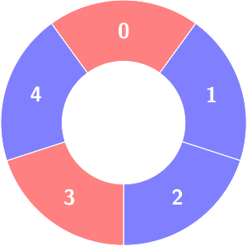
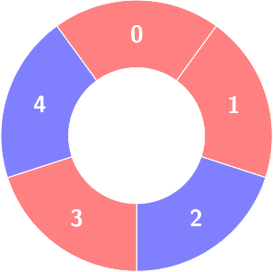
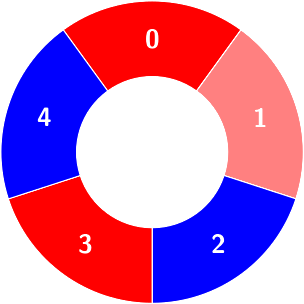
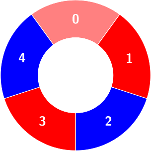
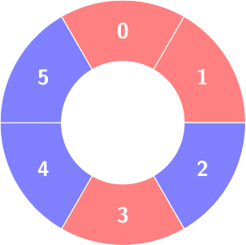
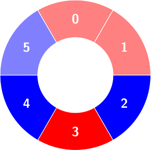
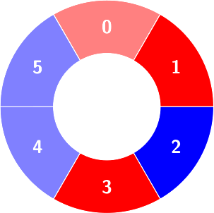

| Category | Difficulty | Likes | Dislikes |
|---|---|---|---|
| Algorithms | Hard | 60 | 10 |
There are some red and blue tiles arranged circularly. You are given an array of integers colors and a 2D integers array queries.
The color of tile i is represented by colors[i]:
colors[i] == 0 means that tile i is red.colors[i] == 1 means that tile i is blue.An alternating group is a contiguous subset of tiles in the circle with alternating colors (each tile in the group except the first and last one has a different color from its adjacent tiles in the group).
You have to process queries of two types:
queries[i] = [1, sizei], determine the count of alternating groups with size sizei.queries[i] = [2, indexi, colori], change colors[indexi] to colori.Return an array answer containing the results of the queries of the first type in order.
Note that since colors represents a circle, the first and the last tiles are considered to be next to each other.
Example 1:
Input: colors = [0,1,1,0,1], queries = [[2,1,0],[1,4]]
Output: [2]
Explanation:

First query:
Change colors[1] to 0.

Second query:
Count of the alternating groups with size 4:


Example 2:
Input: colors = [0,0,1,0,1,1], queries = [[1,3],[2,3,0],[1,5]]
Output: [2,0]
Explanation:

First query:
Count of the alternating groups with size 3:


Second query: colors will not change.
Third query: There is no alternating group with size 5.
Constraints:
4 <= colors.length <= 5 * 1040 <= colors[i] <= 11 <= queries.length <= 5 * 104queries[i][0] == 1 or queries[i][0] == 2i that:
queries[i][0] == 1: queries[i].length == 2, 3 <= queries[i][1] <= colors.length - 1queries[i][0] == 2: queries[i].length == 3, 0 <= queries[i][1] <= colors.length - 1, 0 <= queries[i][2] <= 1